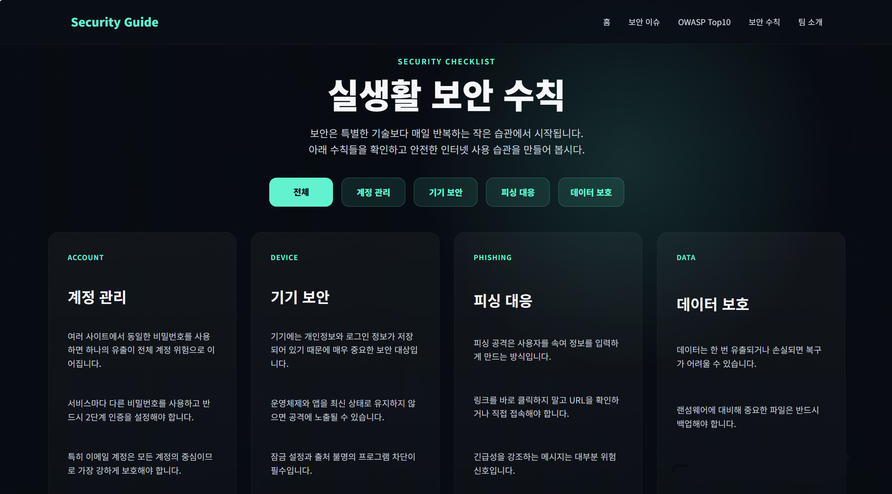
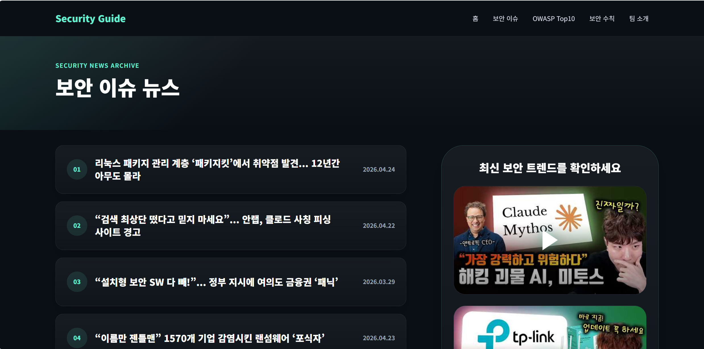
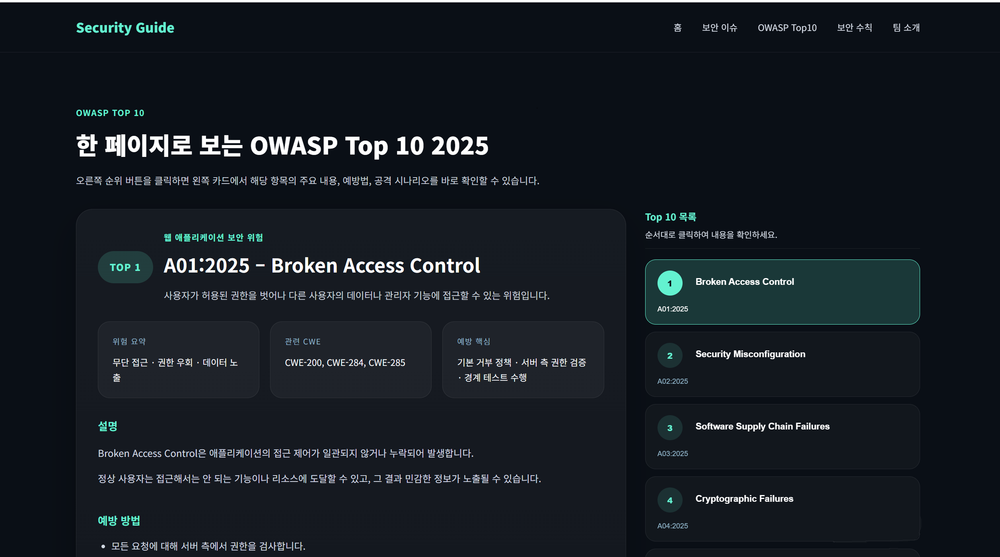

박형진
팀장 / OWASP Top 10
- 프로젝트 전체 설계 및 구현
- OWASP TOP10 페이지 설계 및 구현
- 최종 결과물 취합 및 배포
Home > Team
팀 프로젝트 주제와 팀원 역할을 소개하는 페이지입니다.
주요 사이버 보안 위협과 예방법 안내 웹사이트 제작 과정을
정리했습니다.
팀 프로젝트 추가하기
피싱, 랜섬웨어, 개인정보 유출 등 일상생활에서 접할 수 있는 보안 위협을 소개하고, 사용자가 실생활에서 적용할 수 있는 예방법을 쉽게 확인할 수 있도록 만든 보안 정보 안내 웹사이트입니다.

사용자가 생활 속 사이버 보안 위협을 쉽게 이해하고, 피싱이나 개인정보 유출 같은 문제를 예방할 수 있도록 정보를 전달하는 것이 목표입니다.
메인 홈, 보안 이슈, OWASP Top 10, 보안 수칙, 팀 소개 페이지로 구성하여 정보 전달과 가독성을 높였습니다.
리스트, 표, 카드형 레이아웃, 미디어 요소, 반응형 화면을 활용하여 HTML과 CSS 중심의 완성도 있는 웹사이트를 제작했습니다.
팀장과 팀원들이 맡은 페이지와 구현 내용을 정리했습니다.
팀장 / OWASP Top 10
Main Page / UI Detail
Security Guide / Contact
Security Issue Page
각자 맡은 페이지를 중심으로 제작하고, 기본적인 HTML/CSS 구조와 자료 조사는 함께 진행했습니다. 이후 공통 디자인 기준을 맞추고, 페이지 간 연결과 반응형 화면을 점검하며 하나의 웹사이트로 통합했습니다.
팀 프로젝트를 진행하며 제작한 화면과 작업 과정을 정리했습니다.


